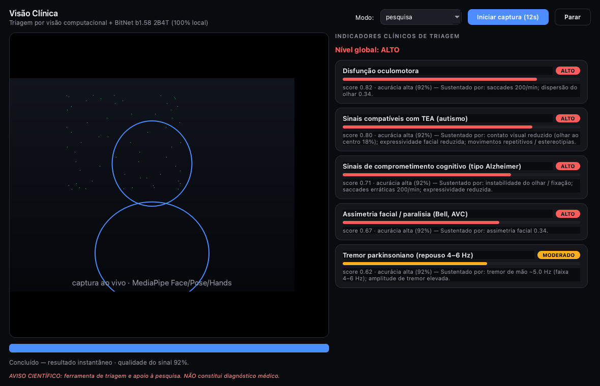
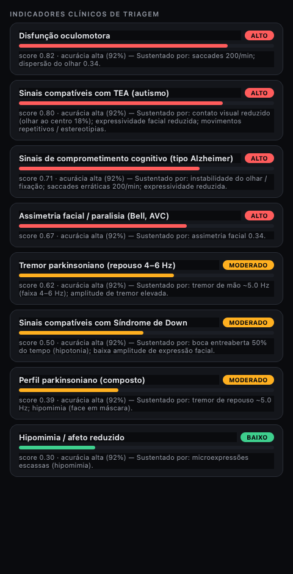

Triagem por visão computacional e IA local (BitNet b1.58 2B4T). A partir de uma webcam, extrai biomarcadores faciais, oculares e motores e gera indicadores probabilísticos de triagem — em segundos, sem enviar nenhum dado para a nuvem.

Triagem rápida de pacientes, com indicadores de risco e relatório em PDF.
Acesso a todas as métricas e biomarcadores, exportação em CSV para análise.
Interface simplificada: basta olhar para a câmera e receber um indicador de risco.
OpenCV + MediaPipe (Face Mesh, Pose, Hands) extraem tremor, microexpressões, rastreio ocular, simetria facial e movimento corporal.
BitNet b1.58 2B4T roda na própria máquina (sem APIs externas) para correlacionar os achados e gerar relatórios técnicos.
Indicadores clínicos determinísticos em milissegundos; a narrativa da IA é opcional e roda em segundo plano.
Cada indicador reporta uma confiança; só são exibidos os de acurácia média/alta. Captura ruim aciona um aviso para refazer.
Exportação em PDF e CSV, persistência local em SQLite, modos Pesquisa e Triagem.
Técnicas fundamentadas em revistas de alto impacto (IEEE TBME, Nature Reviews Neurology, J. Neuroscience Methods).
| Condição rastreada | Faixa |
|---|---|
| Sinais compatíveis com TEA (autismo) | alto |
| Perfil parkinsoniano (tremor, hipomimia, bradicinesia) | moderado |
| Sinais tipo Alzheimer (oculomotor / cognitivo) | alto |
| Sinais compatíveis com Síndrome de Down | moderado |
| Tremor parkinsoniano · Paralisia facial · Disfunção oculomotora | base |
| Piscar · Sonolência · Estresse · Hipomimia · Discinesia | base |
12 indicadores no total, cada um com score, nível de risco, fatores e confiança.

captura de 12s
MediaPipe extrai biomarcadores
filtros, Welch/SNR, qualidade
indicadores + confiança
narrativa + relatório
Frequência cardíaca e variabilidade (VFC) a partir da cor da pele. Wang et al., IEEE TBME 2017; Poh et al., Optics Express 2010.
Estabilidade de fixação (BCEA) e main-sequence de saccades. Anderson & MacAskill, Nat. Rev. Neurol. 2013; Bahill et al. 1975.
Redução da dinâmica das Action Units (bradicinesia facial). Bandini et al., J. Neurosci. Methods 2017; Ekman FACS.
Detecção de movimento repetitivo por autocorrelação. Goodwin et al., J. Autism Dev. Disord. 2011.
Todo o processamento — imagem, vídeo, biomarcadores e a IA — ocorre na própria máquina. Nenhum dado sai do computador, sem dependência de serviços externos. Ideal para o sigilo de dados de saúde.